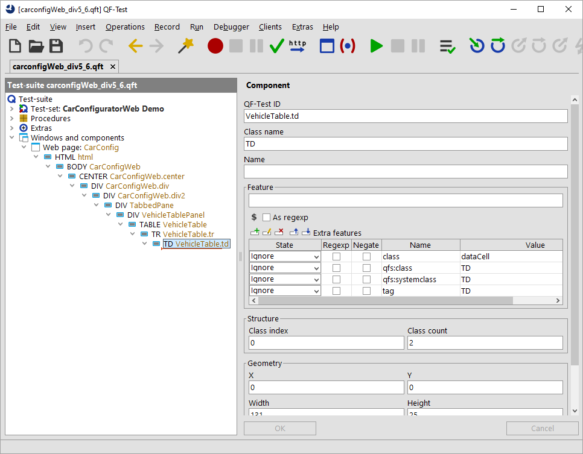
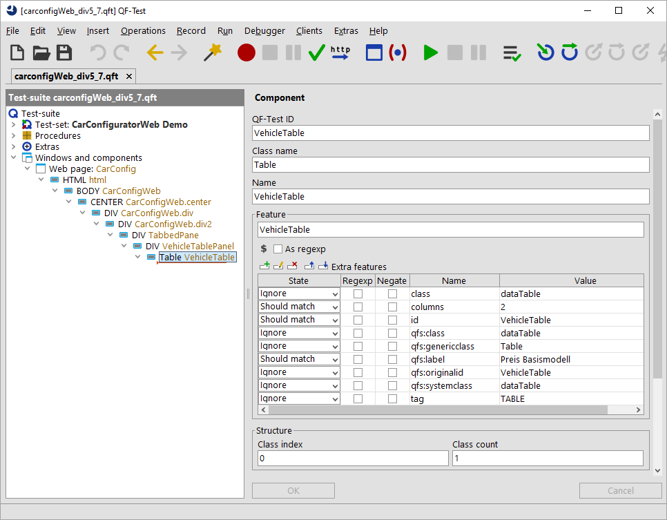

| Version 6.0.3 |
The previously described approach will work for most standard components as buttons or checkboxes. But besides those components there are also complex components in our GUI. Those components represent data and we would like to address their content by the sub-item syntax provided by QF-Test. Those components could be tables, trees or lists. For those components we need to map the dedicated class as well as the sub-item class. You will find the details in the following sections: Mapping of Comboboxes, Mapping of Lists, Mapping of Tables and TreeTables, Mapping of TabPanels and Accordions, Mapping of Trees.
|
|
|
||||||
|
| Figure 47.13: Simplification for complex components | ||||||
Our example is the table showing the cars of the WebCarConfigurator. Again, we need to record some clicks on the shown cars and analyze the recording. The standard recording looks like this:
|
|  | ||
|
| Figure 47.14: Recording of table in WebCarConfigurator | ||
The click was recorded on a TD component, which
is the child of a TR component, which is part of a
TABLE component. The recorded
TD component contains an extra feature
class with the value dataCell. The
TR component has the value dataRow,
and the TABLE has the value dataTable for that attribute.
When we select the nodes and observe the component highlighting in the SUT we notice the following:
A TD node represents a cell, a
TR node represents a row of a table and a
TABLE node represents an entire table. Exactly those
nodes need to be investigated now in order to create a good
mapping to generic classes. QF-Test requires those three classes
plus the header row and a header cell to resolve a table, see
Mapping of Tables and TreeTables for details.
Let's start with the TABLE node. This node has a
class attribute with the value
dataTable. This seems to be a clear sign that any
dataTable represents a table. So we select the call
to the qfs.web.ajax.installCustomWebResolver again
and we extend the parameter genericClasses to
dataTable=Table,textfield=TextField,button=Button.
The next step is the row of the table. After selecting the
TR node we can see that there is another
class attribute with the value
dataRow. This seems to be a clean-cut case.
Now we need to add that value to the procedure call
of qfs.web.ajax.installCustomWebResolver again
and we extend the parameter genericClasses to
dataRow=TableRow,dataTable=Table,textfield=TextField,
button=Button.
Next we need to analyze the TD node.
Again, we find the class attribute, this time
with the value dataCell. So, let's add this to our
procedure call as before. Now genericClasses looks
dataCell=TableCell,dataRow=TableRow,dataTable=Table,
textfield=TextField,button=Button.
Note that you are allowed to enter line breaks after each comma
to ensure a better readability.
Also, we would like QF-Test to recognize the column headers, so it can
use them as text index for the column when we record a table cell.
This time the class attribute is
headerRow for the header row and headerCell
for each column header. So we complete the
genericClasses parameter. It now reads
headerRow=TableHeader, headerCell=TableHeaderCell, dataCell=TableCell,
dataRow=TableRow, dataTable=Table,
textfield=TextField, button=Button.
We will now delete the previously recorded
components, run the
qfs.web.ajax.installCustomWebResolver, re-load the
web-page and re-record a click again.
As result we get a click with the typical QF-Test item syntax on a
component like VehicleTable@Model&0 (or any other
row, depending what you clicked on). In the recorded
components area you will just see the Table object and no
child component anymore
as they are now treated by QF-Test as items of a table.
|
|  | ||
|
| Figure 47.15: Recording of resolved table item in WebCarConfigurator | ||
After resolving this complex component we can proceed to the next section for the next steps.
| Last update: 9/6/2022 Copyright © 1999-2022 Quality First Software GmbH |